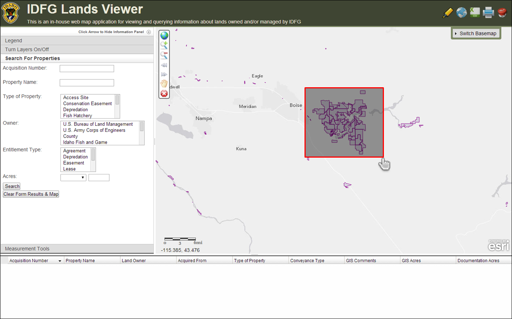
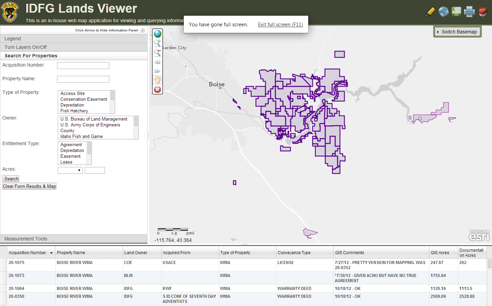

TOOLBAR: Select Properties by Drag-A-Box
IMPORTANT: This tool is meant to be used with the 'IDFG Properties' layer only.
To select multiple IDFG properties on the map and have their attributes show up in the DataGrid, activate this tool by clicking on it once and then drag a box around the properties. To deactivate the tool, double-click the tool icon.
Activate the tool and drag a box:

The features you drew the box around will be zoomed to, highlighted, and their attributes will be displayed in the DataGrid:

Once you are done with the tool, double-click the tool icon to deactivate it. Click here to learn more about the DataGrid.
NOTE: Using the navigation toolbar tools while the Select Properties by Drag-a-box active will disable this tool without un-highlighting the selected features. If you click the 'deactivate' button, the SelectProperties by Drag-a-box will be reactivated.
Created with the Personal Edition of HelpNDoc: Free CHM Help documentation generator